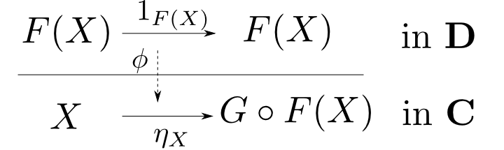
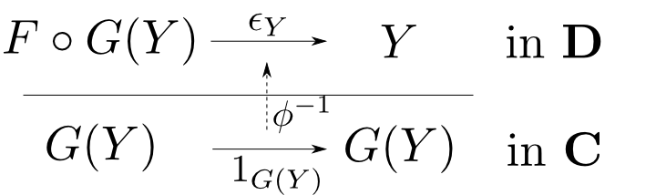
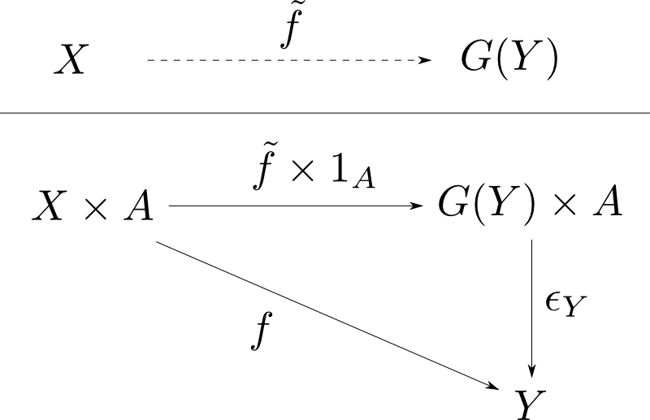
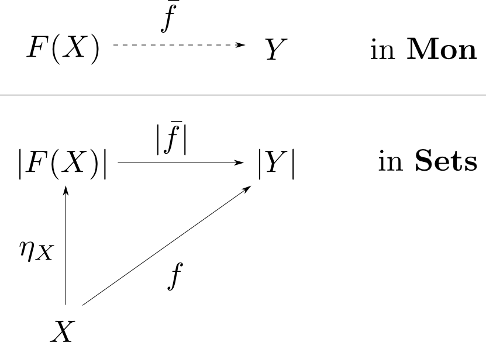
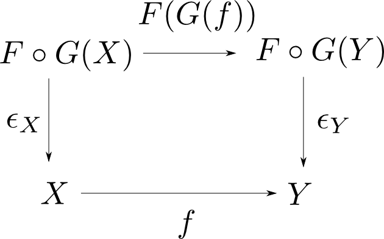

圏論勉強会
第13回
@ワークスアプリケーションズ
中村晃一2013年8月8日
謝辞
この勉強会の企画，会場設備の提供をして頂きました
㈱ ワークスアプリケーションズ様
にこの場をお借りして御礼申し上げます。
この会について
- 圏論(category theory)を題材にいろんなことを学びます。
- 分かり易さを重視して初歩的な例を多用します。
- 関数型言語の経験がある方がより楽しめると思います。資料中では主にHaskellを使います。
- 中高生も数人見ているらしいのでプログラミングと関係が浅い内容も取り上げます。
- この資料はhttp://nineties.github.com/category-seminarに置いてあります。
第13回
随伴・モナド
第13回の内容
前回にひき続いて随伴の説明をします。様々な圏論の概念は随伴として統一的に理解する事が可能です。 また、モナドという概念を圏論的な文脈でのそれと、表示的意味論への応用に関して説明します。
随伴
随伴
圏$\mathbf{C},\mathbf{D}$と函手$F: C\leftrightarrows D: G$について, 任意の$X,Y$に関して自然な同型 $$ \phi: \mathrm{Hom}_{\mathbf{D}}(F(X), Y) \cong \mathrm{Hom}_{\mathbf{C}}(X, G(Y)) $$ が存在するならば$(F,G,\phi)$を随伴(adjunction)と言う。また$F$を$G$の左随伴(left adjoint),$G$を$F$の右随伴(right adjoint)と言い $$ F\dashv G$$ と表す。

注: $\phi$は$X,Y$のペア毎に存在するので注意して下さい。
単位元と余単位元
随伴$(F,G,\phi)$に対して $$ \eta_X = \phi(1_{F(X)})\qquad \epsilon_Y = \phi^{-1}(1_{G(Y)}) $$ により定まる自然変換$\eta: 1_{\mathbf{C}}\rightarrow G\circ F$及び,$\epsilon: F\circ G\rightarrow 1_{\mathbf{D}}$を随伴の単位元(unit)、余単位元(counit)という。
 今の定義は随伴のHom-set definitionと呼ばれる形の定義です。対称性がありとても綺麗な形をしています。
しかし、この定義から直接これまでに学習してきた普遍性に基づく定義を導出するのは面倒ですので、随伴の同値な定義を紹介します。
Unit definition
函手$F: \mathbf{C}\leftrightarrows \mathbf{D}: G$が随伴$F\dashv G$をなす事は以下と同値。
自然変換$\eta: 1_{\mathbf{C}}\rightarrow G\circ F$が存在して、任意の対象$X,Y$と射$f: X\rightarrow G(Y)$に対して 以下の図式が可換となるような射$\bar{f}: F(X)\rightarrow Y$が唯一つ存在する。
【証明:Hom-set definition $\Rightarrow$ Unit definition]
随伴$ \phi: \mathrm{Hom}_{\mathbf{D}}(F(X), Y) \cong \mathrm{Hom}_{\mathbf{C}}(X, G(Y)) $
に対して$\eta_X = \phi(1_{F(X)})$とおく。
$X$に関する自然性より任意の$g: X\rightarrow X'$に対して下図が可換である。
すなわち,任意の$h: F(X')\rightarrow Y$について $$ \phi(h)\circ g = \phi(h\circ F(g)) \qquad\cdots (1)$$ が成り立つ。
同様に$Y$に関する自然性より任意の$g: Y\rightarrow Y'$に対して下図が可換である。
すなわち,任意の$h: F(X)\rightarrow Y$について $$ \phi(g\circ h) = G(g)\circ\phi(h) \qquad\cdots (2)$$ が成立する。
まず、任意の$f: X\rightarrow Y$に対して $$ \begin{aligned} G(F(f))\circ \eta_X &= G(F(f))\circ \phi(1_{F(X)}) \\ &= \phi(F(f)\circ 1_{F(X)}) \qquad (\because (2)) \\ &= \phi(1_{F(Y)}\circ F(f)) \\ &= \phi(1_{F(Y)})\circ f \qquad (\because (1)) \\ &= \eta_Y\circ f \\ \end{aligned} $$ すなわち、下図が可換となるので$\eta_X$は自然変換$\eta : 1_{\mathbf{C}}\rightarrow G\circ F$を定める。
続いて,任意の$f: X\rightarrow G(Y)$に対して $$ f = G(\bar{f})\circ \eta_X $$ を満たす$\bar{f}: F(X)\rightarrow Y$は $$ \begin{aligned} f &= G(\bar{f})\circ \phi(1_{F(X)}) \\ &= \phi(\bar{f}\circ 1_{F(X)}) \qquad (\because (2)) \\ &= \phi(\bar{f}) \\ \end{aligned} $$ より$\phi$が全単射である事から$\bar{f} = \phi^{-1}(f)$と一意に定まる。 以上でHom-set definitionからUnit-definitionが得られた。 □
【証明:Unit definition $\Rightarrow$ Hom-set definition】
自然変換$\eta: 1_{\mathbf{C}}\rightarrow G\circ F$を用いて
$$ \phi(f) = G(f)\circ\eta_X \qquad (f: F(X)\rightarrow Y) \qquad\cdots(*)$$
と定める。$\eta$の普遍性より$\phi$は全単射
$$ \phi: \mathrm{Hom}_{\mathbf{D}}(F(X), Y)\cong\mathrm{Hom}_{\mathbf{C}}(X, G(Y)) $$
である。
次に,任意の$f: F(X')\rightarrow Y$と$g: X\rightarrow X'$に対して $$ \begin{aligned} \phi(f)\circ g &= G(f)\circ\eta_{X'}\circ g \\ &= G(f)\circ G(F(g))\circ\eta_X \qquad (\because \text{$\eta$は自然変換$1_{\mathbf{C}}\rightarrow G\circ F$}) \\ &= G(f\circ F(g))\circ \eta_X \\ &= \phi(f\circ F(g)) \\ \end{aligned} $$ が成り立つので下図が可換である。すなわち$(*)$は$X$に関して自然である。
同様に,任意の$f: F(X)\rightarrow Y$と$g: X\rightarrow X'$に対して $$ \begin{aligned} G(g)\circ\phi(f) &= G(g)\circ G(f)\circ\eta_X \\ &= G(g\circ f)\circ\eta_X \\ &= \phi(g\circ f) \\ \end{aligned} $$ が成り立つので下図が可換である。すなわち$(*)$は$Y$に関して自然である。
以上よりUnit definitionからHom-set definitionが得られた。 □
Counit definition
函手$F: \mathbf{C}\leftrightarrows \mathbf{D}: G$が随伴$F\dashv G$をなす事は以下と同値。
自然変換$\epsilon: F\circ G\rightarrow 1_{\mathbf{D}}$が存在して、任意の対象$X,Y$と射$f: F(X)\rightarrow Y$に対して 以下の図式が可換となるような射$\tilde{f}: X\rightarrow G(Y)$が唯一つ存在する。
これは双対性により得られます。
様々な随伴の例
対角函手の右随伴
$ \Delta(X) = (X,X) $で定義される対角函手$\Delta: \mathbf{C}\rightarrow \mathbf{C}\times\mathbf{C}$が右随伴$P$ を持つ条件は何であるのかを調べます。
自然変換$\epsilon: \Delta\circ P \rightarrow 1_{\mathbf{C}\times\mathbf{C}}$の$X$成分($\mathbf{C}\times\mathbf{C}$の射)を $$ \epsilon_X = (\pi_1, \pi_2) $$ と簡単に表すことにすると,任意の$(f,g): (X,X)\rightarrow (A,B)$に対して $$ (\pi_1,\pi_2)\circ(u,u) = (f,g) \ \Leftrightarrow \pi_1\circ u = f, \pi_2\circ u = g $$ を満たす$u: X\rightarrow P(A,B)$が唯一つ存在する事が$P(A,B)$の条件です。これは$\epsilon_X$が射影であり, $$ P(A,B)\cong A\times B $$ であるという事に他なりません。
つまり,対角函手$\Delta(X):\mathbf{C}\rightarrow\mathbf{C}\times\mathbf{C}$が右随伴を持つのは,$\mathbf{C}$が任意の二対象の積を持つ時であり $$ \Delta \dashv \times $$ となります。
同様にして対角函手$\Delta$が左随伴を持つのは,$\mathbf{C}$が任意の二対象の余積を持つ時であり $$ + \dashv \Delta $$ となります。まとめると, $$ + \dashv \Delta \dashv \times $$ という関係があります。
一般の対角函手
インデックス圏$\mathbf{J}$に対して対角函手 $$ \Delta_{\mathbf{J}}: \mathbf{C} \rightarrow \mathbf{C}^{\mathbf{J}} $$ は $$ \Delta_{\mathbf{J}}(X)(A) = X,\ \Delta_{\mathbf{J}}(X)(f) = 1_X $$ によって定義されます。$\mathbf{J}$を二点集合$\mathbf{2}$と置いたのが、先ほどの例です。 $$ \mathbf{C}^{\mathbf{2}}\cong \mathbf{C}\times\mathbf{C} $$ だった事に注意しましょう。
対角函手の左右随伴
インデックス圏$\mathbf{J}$に対して$\Delta_{\mathbf{J}}$が左随伴・右随伴を持つならば $$ \lim_{\stackrel{\longrightarrow}{\mathbf{J}}} \dashv \Delta_{\mathbf{J}} \dashv \lim_{\stackrel{\longleftarrow}{\mathbf{J}}} $$ が成立する。
例えば$\mathbf{J}$を以下の様な平行射からなる圏とすると,
任意の函手$D: \mathbf{J}\rightarrow\mathbf{C}$に対して $$ \lim_{\stackrel{\longleftarrow}{\mathbf{J}}}D, \lim_{\stackrel{\longrightarrow}{\mathbf{J}}}D $$ がイコライザ及びコイコライザとなるという事をやりましたが(第7回),これらを随伴のCounit/Unit definitionから導出してみましょう。
指数対象
続いて,函手$F(X) = X\times A$の右随伴$G$が存在する条件をCounit definitionを用いて書きだしてみると,
$\epsilon_Y: G(Y)\times A\rightarrow Y$が存在して,任意の$f: X\times A\rightarrow Y$に対して $$ \epsilon_Y\circ(\tilde{f}\times 1_A) = f $$ を満たす$\tilde{f}: X\rightarrow G(Y)$が唯一つ存在する。
となります。これは$\epsilon_Y$が評価射であり $$ G(Y) \cong Y^A $$ であるという事に他なりません。
つまり $$ (-)\times A \dashv (-)^A $$ という関係があります。
自由モノイドの構成
忘却函手$|-|: \mathbf{Mon}\rightarrow\mathbf{Sets}$の左随伴$F$が存在する条件をUnit definitionを用いて書きだしてみると,
$\eta_X: X\rightarrow |F(X)|$が存在して,任意の$f: X\rightarrow |Y|$に対して $$ |\bar{f}|\circ\eta_X = f $$ を満たす$\bar{f}: F(X)\rightarrow Y$が唯一つ存在する。
となります。これは$F(X)$が自由モノイドである事に他なりません(第3回)。
また$\eta_X(a) = [a]$となります。
自由モノイドの構成の余単位元
余単位元は下図を可換にする$\epsilon_Y$です。 ここで$F(f)$は $$F(f)([a_1,\cdots,a_n]) = [f(a_1),\cdots,f(a_n)] $$ という列から列への準同型であり，これに$\epsilon_Y$を適用したのが$[a_1,\cdots,a_n]$を$\tilde{f}$で畳み込んだものと一致するので， $$ \epsilon_Y([b_1,\cdots,b_n]) = b_1\circ \cdots \circ b_n $$ となります。($\circ$は$Y$のモノイド演算)
随伴に関する定理
随伴は存在するなら一意
$F$に右随伴が存在するならば,それは同型を除いて一意である。すなわち $$ F\dashv G,\ F\dashv H$$ ならば$G \cong H$である。左随伴に関しても同様。
【証明】
任意の$X,Y$に対して
$$ \mathrm{Hom}_{\mathbf{C}}(X, G(Y)) \cong \mathrm{Hom}_{\mathbf{D}}(F(X), Y)\cong\mathrm{Hom}_{\mathbf{C}}(X, H(Y)) $$
は$X$に関して自然なので米田の補題より
$$ G(Y) \cong H(Y) $$
となる。さらにこれは$Y$に関して自然なので
$$ G \cong H $$
である。
□
随伴と連続性
$$ F\dashv G \qquad (F:\mathbf{C}\leftrightarrows\mathbf{D}:G)$$ の時$F$は余連続,$G$は連続。
函手$D:\mathbf{J}\rightarrow\mathbf{C}$の余極限が存在すると仮定すると,任意の$Y$に関して自然同型 $$\begin{aligned} \mathrm{Hom}_{\mathbf{D}}(F(\lim_{\rightarrow}D_i), Y) &\cong \mathrm{Hom}_{\mathbf{C}}(\lim_{\rightarrow}D_i, G(Y)) \quad(\because\text{随伴})\\ &\cong \lim_{\rightarrow}\mathrm{Hom}_{\mathbf{C}}(D_i, G(Y)) \quad(\because \text{反変Hom函手は余連続})\\ &\cong \lim_{\rightarrow}\mathrm{Hom}_{\mathbf{D}}(F(D_i), Y) \quad(\because\text{随伴})\\ &\cong \mathrm{Hom}_{\mathbf{D}}(\lim_{\rightarrow}F(D_i), Y) \quad(\because\text{反変Hom函手は余連続})\\ \end{aligned} $$ が存在する。依って米田の補題より $$ F(\lim_{\rightarrow}D_i) \cong \lim_{\rightarrow}F(D_i) $$ が成り立つので$F$は余連続である。$G$の連続性は双対性より示される。 □
随伴の連続性の例
デカルト閉圏$\mathbf{C}$が任意の有限余積を持つとします。 $$(-)\times A\dashv (-)^A$$ だったので今の定理より $$ \begin{aligned} & 1^A \cong 1 \\ & (B\times C)^A \cong B^A\times C^A \\ & 0\times A \cong 0 \\ & (B+C)\times A \cong B\times A + C\times A \end{aligned} $$ などが直ちに得られます。特に3,4番目の性質が成り立つので任意の有限余積を持つデカルト閉圏は分配的(第11回)である事が判ります。
以上で随伴については終了としますが，他にも興味深い様々な随伴の例や定理が存在します。 テキストの第9章を是非読んでみて下さい。
モナド
まず，純粋に圏論的な意味でのモナドを説明します。その後、理論計算機科学での応用について説明します。
モナド
圏$\mathbf{C}$におけるモナド(monad)とは，自己函手$T:\mathbf{C}\rightarrow\mathbf{C}$と自然変換 $$ \eta: 1_{\mathbf{C}}\rightarrow T,\ \mu: T^2\rightarrow T $$ からなり等式 $$ \begin{aligned} & \mu\circ\mu_T = \mu\circ T(\mu) \\ & \mu\circ\eta_T = \mu\circ T(\eta) = 1_T \\ \end{aligned} $$ が成り立つものである。$\eta$をモナドの単位元，$\mu$をモナドの積などと呼ぶ。
注:$ T^2 = T\circ T$
今の定義における等式は以下の可換図式で表されます。
成分毎に書き表すと任意の$X$に対して $$\begin{aligned} & \mu_X \circ T(\mu_X) = \mu_X \circ \mu_{T(X)} \\ & \mu_X \circ \eta_{T(X)} = \mu_X\circ T(\eta_X) = 1_{T(X)}\\ \end{aligned} $$ が成り立つという意味です。
モナドの例:リストモナド
簡単の為に$\mathbf{Sets}$で考えます。
函手$T: \mathbf{Sets}\rightarrow\mathbf{Sets}$を $$ T(A) = \text{($A$の要素からなる有限列の集合)} $$ と定義します。$T(f)$は列の要素毎に$f$を適用する関数にします。
さらに，自然変換を $$ \begin{aligned} &\eta_X(a) = [a] \\ &\mu_X([a_1,\cdots,a_n]) = a_1\append\cdots\append a_n\\ \end{aligned} $$ と定義すると$(T,\eta,\mu)$はモナドとなります。
$\eta,\mu$が自然変換である事の証明は省略し，等式の証明のみを行います。
【一つ目の等式】
$$\begin{aligned}
&\mu_X\circ T(\mu_X)([[a_1,\cdots,a_m],\cdots,[x_1,\cdots,x_n]]) \\
= &\mu_X([a_1\append\cdots\append a_m,\cdots,x_1\append\cdots\append x_n]) \\
= &a_1\append\cdots\append a_m\append\cdots\append x_1\append\cdots\append x_n \\
&\mu_X\circ \mu_{T(X)}([[a_1,\cdots,a_m],\cdots,[x_1,\cdots,x_n]]) \\
= &\mu_X([a_1,\cdots,a_m,\cdots,x_1,\cdots,x_n]) \\
= &a_1\append\cdots\append a_m\append\cdots\append x_1\append\cdots\append x_n \\
\end{aligned} $$
より
$$ \mu_X\circ T(\mu_X) = \mu_X\circ \mu_{T(X)} $$
【二つ目の等式】
$$\begin{aligned}
&\mu_X\circ\eta_{T(X)}([a_1,\cdots,a_n]) \\
= &\mu_X([[a_1,\cdots,a_n]]) \\
= &[a_1,\cdots,a_n] \\
&\mu_X\circ T(\eta_X)([a_1,\cdots,a_n]) \\
= &\mu_X([[a_1],\cdots,[a_n]]) \\
= &[a_1,\cdots,a_n] \\
\end{aligned} $$
より
$$ \mu_X\circ\eta_{T(X)} = \mu_X\circ T(\eta_X) = 1_{T(X)} $$
随伴とモナドの関係
随伴$F\dashv G$の単位元・余単位元を$\eta,\epsilon$とすると
- 自己函手$T = G\circ F: \mathbf{C}\rightarrow\mathbf{C}$
- 自然変換$\eta: 1_{\mathbf{C}}\rightarrow T$
- 自然変換$G(\epsilon_F): T^2 \rightarrow T$
はモナドである。
【証明:一つ目の等式】

$\epsilon$は自然変換$\epsilon: F\circ G\rightarrow 1_{\mathbf{D}}$なので，任意の$X,Y$に関して
右の図式が可換。
従って$X$に$F\circ G\circ F(X)$，$Y$に$F(X)$，$f$に$\epsilon_{F(X)}$を代入して図式全体を$G$で移すと以下の可換図式 が得られる。
よって$T=G\circ F$，$\mu_X = G(\epsilon_{F(X)})$より $$\mu_X \circ T(\mu_X) = \mu_X \circ \mu_{T(X)}$$ である。 □
【証明:二つ目の等式】
任意の$f: F(X)\rightarrow Y$に対して
$$ \phi(f) = G(f)\circ\eta_X $$
だったので，$\epsilon_{F(X)}: F\circ G\circ F(X)\rightarrow F(X)$を代入して
$$ \phi(\epsilon_{F(X)}) = G(\epsilon_{F(X)})\circ\eta_{G(F(X))} $$
である。ここで$\epsilon_{F(X)} = \phi^{-1}(1_{G(F(X))})$であったから
$$ 1_{G(F(X))} = G(\epsilon_{F(X)})\circ \eta_{G(F(X))} $$
つまり
$$ 1_{T(X)} = \mu_X \circ \eta_{T(X)} $$
である。
また任意の$f: X\rightarrow G(Y)$に対して $$\phi^{-1}(f) = \epsilon_Y\circ F(f)$$ だったので，$f = \eta_X$とすると $$\phi^{-1}(\eta_X) = \epsilon_{F(X)}\circ F(\eta_X) $$ すなわち$\eta_X = \phi(1_{F(X)})$より $$ 1_{F(X)} = \epsilon_{F(X)}\circ F(\eta_X) $$ が成り立つ。この両辺に$G$を適用して $$ 1_{G(F(X))} = G(\epsilon_{F(X)})\circ G(F(\eta_X)) $$ が成り立つ。すなわち $$ 1_{T(X)} = \mu_X\circ T(\eta_X) $$ である。 □
随伴からリストモナドを導出する例
自由モノイドの構成と忘却函手の随伴 $$ F \dashv |-| $$ からモナドを導出すると，先ほどのリストモナドが得られます。 まず任意の集合$A$に対して$F(A)$が自由モノイド，$|F(A)|$がその台集合なので $$ T(A) = |F(A)| = \text{($A$の要素からなる有限列の集合)} $$ となります。また，$ \eta_X(a) = [a] $でであり， $$ \epsilon_Y([a_1,\cdots,a_n]) = a_1\circ\cdots\circ a_n $$ だったので，$\epsilon_{F(X)}$は $$ \epsilon_{F(X)}([a_1,\cdots,a_n]) = a_1\append\cdots\append a_n$$ になります。($F(X)$は自由モノイドなのでその演算は連結捜査) 従って， $$ \mu_X = |\epsilon_{F(X)}|([a_1,\cdots,a_n]) = a_1\append\cdots\append a_n$$ となります。
練習問題
随伴 $$ (-)\times S \dashv (-)^S $$ からモナドを導出して下さい。
逆に，圏$\mathbf{C}$上のモナド$(T,\eta,\mu)$が与えられると$\mathbf{C}$と
Eilenberg-Moore圏と呼ばれる圏の間に随伴を構成する事が出来ます。
時間がないので解説は省略しまが，テキストの10.3節に説明があります。$F$代数の圏を理解していれば読めるはずです。
随伴とモナドが一対一に対応するという訳ではないので注意して下さい。
モノイド対象
モノイド
モノイドとは集合・二項演算・単位元の組$(M,\circ,e)$であって
任意の$x,y,z$に対して
$$ (x\circ y)\circ z = x\circ (y\circ z) $$
任意の$x$に対して
$$ e\circ x = x\circ e = x$$
が成り立つ物でした。これは$\mathbf{Sets}$における以下の可換図式で表現する事が出来ます。
見やすさの為$\circ = \mu$と置き直しています。
モノイダル圏
今の議論では$\mathbf{Sets}$の積$\times$，$\times$が結合的である事，$1$が$\times$の単位であること を使い，その上でモノイドの等式を図式としてあらわしました。
これと同じ特徴を持つ圏をモノイダル圏(monoidal category)と言います。
圏$\mathbf{C}$がモノイダル圏であるとは，函手$\otimes:\mathbf{C}\times\mathbf{C}\rightarrow\mathbf{C}$が存在し， 任意の対象$X,Y,Z$に対して $$ (X\otimes Y)\otimes Z \cong X\otimes (Y\otimes Z) $$ が成り立ち，また対象$I$が存在して $$ I\otimes X \cong X \cong X\otimes I$$ が成り立つ事である。(厳密にはコヒーレンス条件というものが加わる)
モノイド対象
モノイダル圏$(\mathbf{C},\otimes,I)$におけるモノイド対象とは対象$M$,射$\mu: M\otimes M\rightarrow M, e:I\rightarrow M$からなり，以下の図式が可換であるものである。
モナドは自己函手の圏のモノイド対象
圏$\mathbf{C}$を固定して
- 対象: $\mathbf{C}$から$\mathbf{C}$への自己函手
- 射: 自然変換
とすると$\mathbf{C}$上の自己函手の圏が出来ます。この圏は$I = 1_{\mathbf{C}}$，$F\otimes G = F\circ G$とするとモノイダル圏になっています(練習問題)。 すると，$(T,\eta,\mu)$がモナドであるということはこれがこのモノイダル圏におけるモノイド対象であるという事と一致します。
理論計算機科学におけるモナド
表示的意味論の分野でモナドを利用する事が1989年にEugenio Moggiによって提案されました。
表示的意味論とはプログラムに部分関数などの数学的対象を割り当てる事を手法とする意味論でした。Moggiの提案はプログラムの表示(正確にはComputational effectと呼ばれる物の表示)にモナドを利用しようというものです。
Computational effect
単純な計算というのは「$A$型の入力に対して$B$型の出力を行うもの」と考える事ができます。
しかし、実際の計算には以下の様な作用が加わります。これらを計算作用(Computational effect)と呼ぶことにします。
- 値を返さない場合がある(partiality)
- 複数の計算結果がある(nondeterminism)
- 副作用(状態の更新)がある(side-effects)
- エラーが発生する(exception)
- 継続を返す(continuations)
Computational effectを自己函手で表す。
Moggiのアイデアでは，$\mathbf{C}$を型の圏とした場合，計算作用を自己函手$T:\mathbf{C}\rightarrow\mathbf{C}$によって表現します。

「計算作用」の表示が$T$であり，「計算」の表示が射 $$ f: A\rightarrow T(B) $$ という事になります。この射はクライスリ射(Kleisli arrow)と呼ばれます。
$T$の例
- partiality: $T(B) = B + 1$
- nondeterminism: $T(B) = \mathcal{P}_{\text{fin}}(B)$
$\mathcal{P}_{\text{fin}}(B)$は$B$の有限部分集合の集合 - side-effects: $T(B) = (S\times B)^S $
- exception: $T(B) = B + E$
- continuations: $T(B) = R^{R^B}\qquad(\text{$R$は戻り値の型})$
計算の合成
計算$f: A\rightarrow T(B)$と$g: B\rightarrow T(C)$を単純に合成すると，計算作用が2回発生する為，出力が$T^2(C)$という型になってしまいます。
例えば，$T$が副作用を表しているならば$T^2$は「副作用が2度発生する」という計算作用を表します。
計算作用は畳み込める
私達は「副作用のある計算」をいくつ合成しても、単に「副作用のある計算」と認識する事が多いと思います。この考え方の背後には計算作用の畳み込み $$ \mu_X: T^2(X) \rightarrow T(X) $$ が存在しています。この畳込みは下図の$A,B,C$の型に依存していない操作と考えられるので、自然変換$\mu: T^2 \rightarrow T$で表す事にします。
「何もしない」計算
また「何もしない」という計算を表現出来る必要もあります。これは自然変換 $$ \eta: 1_{\mathbf{C}}\rightarrow T $$ で表す事にします。
計算作用の畳み込みは結合的
計算の合成は結合的な操作だと考えられますので，計算作用$T$の畳み込みも結合的だと言えそうです。これがモナドの一つ目の等式 $$\mu_X \circ T(\mu_X) = \mu_X \circ \mu_{T(X)}$$ です。
「何もしない」計算は単位的
$\eta_X$は「何もしない」計算なので，計算作用の畳み込みに関して単位元として振る舞うはずです。これがモナドの二つ目の等式 $$ \mu_X \circ \eta_{T(X)} = \mu_X\circ T(\eta_X) = 1_{T(X)}$$ です。
まとめ
計算作用は型の圏の上のモナド$(T,\eta,\mu)$で表します。
- $\eta$は何もしないという作用
- $\mu$は積み重なった作用の畳み込み
計算はクライスリ射$f: A\rightarrow T(B)$で表し，射$f:A\rightarrow T(B)$と$g: B\rightarrow T(C)$の合成は $$ g\circ_K f = \mu_C\circ T(g)\circ f $$ によって行う。
どう役に立つのか？
計算の数学的な表示を与えるという事は、プログラムの数学的な解析が可能になります。これは「計算とは何か？」事に関する理解を深めてくれますし， プログラム検証やプログラム最適化など具体的な応用の可能性も拓きます。さらに、計算と論理は密接に関わっていますから理論計算機科学分野以外への貢献も考えられます。
また、Haskellにおいてはdo記法というものがありますがこれもモナドによる抽象化の上に成り立っていますし、プログラムのデザインに関する考え方にも影響を与えている(はず)と考えられます。
以上で圏論勉強会を終わります。
全13回、お付き合い頂きありがとうございました。
圏論の入門程度の内容しか出来ませんでしたが、大体どのような学問なのか理解して頂けたと思います。今後は是非Awodey本や「圏論の基礎」などの書籍を読んで、演習問題に取り組んで見て下さい。また学んだ知識を活かして、理論計算機科学の論文(勉強会中に紹介した論文など)を読んでみると良いと思います。